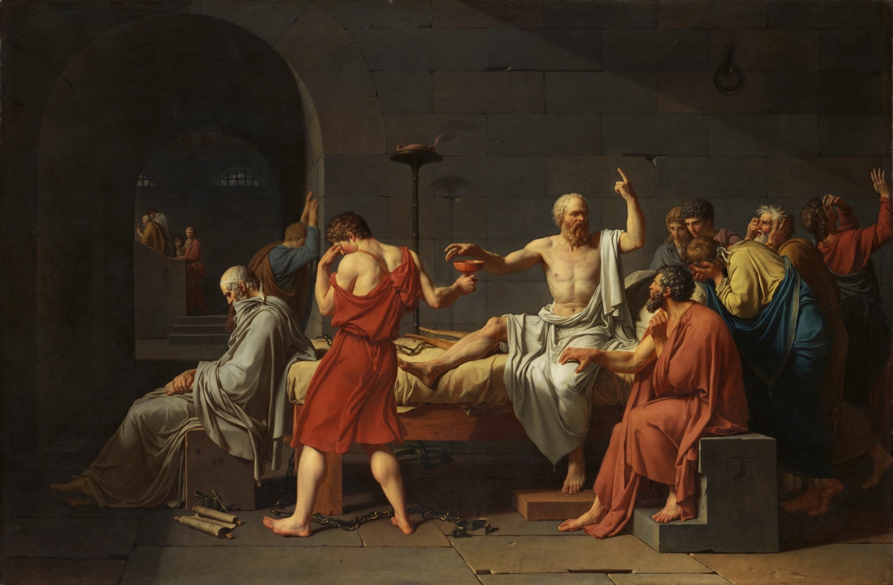

Picture a dark movie theater. You have been in this seat your whole life, watching shapes cross the screen, with no memory of anything else, so you take the shapes for the world. That, Plato says, is where nearly all of us live.
He thought the ordinary world, the one you can see and touch, is the screen, and that the work of a human life is to get up, walk out of the theater, and stand blinking in the daylight, which turns out to be real in a way the screen never was. He put the idea in the mouth of his teacher, Socrates, a stonemason's son who spent his days in the Athenian marketplace asking people to explain what they meant by the words they used, words like justice, courage, good. In 399 BC the city tried Socrates, convicted him, and made him drink poison. This is a walk through that story, the trial, the month in prison, the refusal to escape, the cup of hemlock, and through the single image Plato built around it.
There is a catch, and it is a strange one. Socrates wrote nothing. Not one line. Everything we know about him comes secondhand, and most of it from Plato, who was about twenty-eight when his teacher was killed and who spent the rest of his life writing dialogues with Socrates as the lead character. So the most influential philosopher who ever lived reaches us only as a character on a page, written by his most gifted student. A question runs underneath everything below: how much of this is the real man, and how much is Plato? The honest answer is that nobody is sure, and the last stop comes back to it.

The featured translation throughout is G.M.A. Grube's, the version most American students meet (his Five Dialogues for the trial, and for the Republic his text as revised by C.D.C. Reeve). Each stop gives you the words first, then unpacks them. On the few most famous lines, where the translators split, you can open a panel and see the spread.
Stop 1 / The method
A man who only asked questions
Grube / Apology 21d
"I am wiser than this man; it is likely that neither of us knows anything worthwhile, but he thinks he knows something when he does not, whereas when I do not know, neither do I think I know; so I am likely to be wiser than he to this small extent, that I do not think I know what I do not know."
Socrates never lectured. He asked questions. He would find someone confident, a politician sure he understood justice, a poet sure he understood beauty, and ask him to say what the word actually meant. Then he would ask follow-ups, and more follow-ups, until the definition came apart in the man's hands and he could not say the thing he was certain he knew. The technique has a name now, the elenchus, Greek for cross-examination, and it usually ended in what the Greeks called aporia: a dead stop, where the answer you trusted is gone and you have nothing to put in its place.
The odd part is why he said he did it. A friend had gone to the oracle at Delphi and asked whether anyone was wiser than Socrates, and the priestess answered no, no one. This baffled him, because he was sure he had no wisdom at all. So he went hunting for a counterexample, one genuinely wise man he could point to and tell the god it had got this wrong. He never found one. He kept finding people who thought they knew and did not. In the end he decided the god meant something narrow and deflating: he was the wisest person around only in that he alone knew how little he knew.
That is where the famous line "I know that I know nothing" comes from, except he never quite says it. What he says is more careful, and you can read it above: he does not think he knows what he does not know. That sliver of honesty is the whole of his wisdom, and it is the engine of the method. You cannot start examining a life until you admit you might be wrong about it.
It also explains how he ended up on trial. Put yourself on the receiving end. A man stops you in public, in front of your sons and your rivals, and walks you, politely, into admitting you do not understand the thing your whole reputation rests on. Do that to enough important people and they do not call you wise. They call you a menace.
The line he never quite said
"I know that I know nothing" fits on a mug, and Socrates is its supposed author, but it is a tidy-up of something he put more carefully. Here is the slogan, then what the text actually gives you.
The gap matters. "I know nothing" is a claim about the world, and it eats itself, because then you do not know that either. What Socrates claims is smaller and survives: he does not mistake his ignorance for knowledge. It is a claim about being honest, not about being empty.
Stop 2 / The charges
On trial for his life
Grube / Apology 30e, on what he is to the city
"I was attached to this city by the god ... as upon a great and noble horse which was somewhat sluggish because of its size and needed to be stirred up by a kind of gadfly."
In 399 BC, three citizens charged Socrates with two crimes: not believing in the gods the city believed in, and corrupting the young. The punishment they asked for was death.
A jury of 501 Athenian men heard the case. There were no judges as we know them and no lawyers; Socrates spoke for himself, and Plato's record of that speech is the Apology, from apologia, which means defense, not apology. He does not act sorry. He tells the jury he is the best thing that ever happened to them, a gadfly sent by the god to sting a big, sleepy horse of a city awake, and that a gadfly is irritating precisely because it is doing its job.
Under the religion charge sat a political grudge that nobody was allowed to say out loud. Athens had just lost a long war and then suffered a savage coup by a junta called the Thirty Tyrants, and two of the most hated men of that period, Critias and Alcibiades, had been in Socrates' circle for years. An amnesty after the coup had made it illegal to prosecute people for their old politics, so the case came dressed as impiety instead. The jury would have heard the real charge underneath anyway: that this man's questions had helped produce a generation of clever, contemptuous young men who tried to burn the city down.
They found him guilty, 280 to 221. A swing of thirty votes and he walks free.
Stop 3 / The keystone
"The unexamined life is not worth living"
Grube / Apology 38a
"...the greatest good for a man [is] to discuss virtue every day and those other things about which you hear me conversing and testing myself and others, for the unexamined life is not worth living for men..."
An Athenian trial had a second act. Once a man was convicted, the jury picked between two punishments, the one the prosecution proposed and the one the defendant proposed for himself. The prosecution said death. All Socrates had to do was counter with exile, or a fine, something a jury could choose instead, and he would almost certainly have lived.
Instead he suggested, half seriously, that the city should give him free meals for life, the honor it handed Olympic champions. Then he turned serious and explained why he could not just promise to keep quiet and go home. To stop questioning, to stop examining himself and everyone around him, would be to give up the one thing that made a human life worth living in the first place.
That is the sentence the whole post stands on, and it is worth being clear about what it claims. Not that the examined life is richer, or wiser. That the unexamined one is not worth living, full stop. A life spent watching the shadows, never once turning to ask whether they are real, barely counts as a life at all.
The jury was not charmed. They voted again, this time for death, and by a wider margin than the one that had convicted him. Some of the men who had wanted to let him off were angry enough at the free-meals stunt to now want him gone. He had made his point, and it had cost him everything, which was more or less the point.
One line, three ways
The most quoted sentence in the Apology, and the translators barely fight over it; the Greek is plain. The interest is in the rhythm each one finds.
"This sort of examination" is Tredennick keeping the context the others drop: not vague self-reflection, but the specific, public, pestering cross-examination that just got Socrates sentenced to death. He is not recommending journaling. He means the thing that killed him.
Stop 4 / The escape he refused
Why he would not run
Grube / Crito 49c
"One should never do wrong in return, nor mistreat any man, no matter how one has been mistreated by him."
Executions in Athens were usually quick, but Socrates got about a month in prison first. A state ship had sailed on an annual religious errand to the island of Delos, and by custom no one could be put to death until it came home. So his friends had time, and they used it to plan a jailbreak.
His oldest friend Crito came before dawn with the whole thing arranged: guards bribed, a refuge waiting, money in hand. Escaping was easy. Socrates said no, and the dialogue named after Crito is the argument for why. It rests on a principle he would not bend: you must never do wrong, not even to someone who has wronged you, not even when paying them back is the easy and natural thing. Breaking out would mean wronging the city and its laws, which had given him his entire life, only because the city had now wronged him. Two wrongs were still two wrongs.
He imagines the Laws of Athens themselves walking into the cell to talk him out of it. They argue that he had seventy years to leave if he disliked their terms, and that by staying, marrying, raising children, and taking everything the city offered, he had made a kind of agreement to live under its judgments, including the ones that went against him. By the end, he tells Crito, their voices are humming in his ears "like the sound of the flute in the ears of the mystic," so loud he cannot hear anything else.
You can argue with the logic, and people have for twenty-four centuries. But notice what it costs him to mean it. The examined life is more than a way of winning arguments in the marketplace. It is a set of conclusions you then have to live by, even on the morning they come to kill you.
Stop 5 / The last afternoon
The calm death
Grube / Phaedo 118a, his last words
"Crito, we owe a cock to Asclepius; make this offering to him and do not forget."
When the ship returned, they brought the poison, a cup of crushed hemlock. The Phaedo is Plato's account of the last afternoon, and Socrates is calm the entire time. He spends the day arguing, cheerfully, that the soul is immortal and that a philosopher's whole life is really a long rehearsal for death, so the event itself should hold no terror. Then he shows he means it.
He had sent the women of his household away, he says, because "a man should die in peace. Be quiet, then, and have patience." When the jailer brings the cup, apologizing as he does it, Socrates takes it "quite readily and cheerfully," without trembling or changing color, asks whether he may pour a little out as an offering, and drinks. His friends break down. He is the one who tells them to pull themselves together.
Then he walks until his legs grow heavy, lies down, and the cold creeps up from his feet. The man who gave him the poison pinches his foot and asks if he can feel it. He cannot. When the cold reaches his heart, that will be the end. His last words are a small domestic instruction, the line above, and they have puzzled readers for two thousand years.
A cock was the thank-offering you made to Asclepius, the god of healing, after you recovered from an illness. So the most common reading is also the most unsettling: Socrates is saying that life was the sickness and death is the cure. Whether Plato meant it that darkly, no one can prove. What is clear is that he gives the death the shape of an argument. Here is a man who examined his life so thoroughly that he could meet its end without a flinch, and Plato, who notes that he was too ill to be there himself, lets Phaedo close the account by calling Socrates "of all those we have known the best, and also the wisest and the most upright." The calm is not a detail. It is the conclusion.
His last words, three ways
Eight Greek words, and almost every translator agrees on the cock and the god. They split on the final instruction, which is oddly the human part: how hard does a dying man press the errand on his friend?
Jowett turns it into a gentle question, almost a joke between friends. Grube and Tredennick make it a command. The difference is small and it changes the man: a teasing Socrates, or one giving a last clear order on his way out the door.
Stop 6 / The picture of all of it
The cave
Jowett / Republic, Book 7, 514a
"Human beings living in an underground den ... here they have been from their childhood, and have their legs and necks chained so that they cannot move, and can only see before them, being prevented by the chains from turning round their heads. Above and behind them a fire is blazing at a distance, and between the fire and the prisoners there is a raised way; and you will see, if you look, a low wall built along the way, like the screen which marionette players have in front of them, over which they show the puppets."
Everything so far, the questioning, the trial, the refusal to run, the steady death, comes from the early dialogues, the ones scholars think stay closest to the real Socrates. The cave is different. It is from the Republic, a long middle-period book in which Socrates has plainly become the voice of Plato's own ideas. It is also the most famous picture in philosophy, so read the passage above slowly. It is doing a lot.
People are chained in an underground cave, facing a blank wall, and they have been there since birth. Behind them a fire burns, and between the fire and their backs, others carry objects along a low wall, so the shadows of those objects fall on the wall the prisoners face. The prisoners have never seen anything else. To them the shadows are not shadows of anything. They are simply the world, and the echoes off the stone are the things' own voices. They get good at the shadows. They hand out little honors to whoever can name them fastest.
Now free one prisoner. Make him stand, turn around, and walk toward the fire. Plato is honest about how this feels: it hurts. The light is blinding, the movement aches, and at first he sees the real objects worse than he saw their tidy shadows, so he wants to turn back to the wall where everything was easy. Drag him all the way up and out of the cave, into the sun, and it is worse before it is better. But his eyes adjust. He sees real things, then the sky, then at last the sun itself, and understands that the sun is the source of all of it, the thing that makes everything else visible and alive.
Then comes the part that should give you a chill. The freed man goes back down to tell the others. But his eyes are used to the sun now, and in the dark he can no longer make out the shadows everyone else is expert in, so he looks like the journey ruined him. He fumbles. They laugh. And, Plato writes, if the prisoners could get their hands on whoever was trying to drag them up and out, "they would put him to death."
He wrote that, about a man who frees people who kill him for it, a few years after his own teacher was executed by the city he had tried to wake. The cave is more than a theory of knowledge. It is a quiet, furious account of why Socrates had to die. The theater does not thank you for opening the door, and your feed does not want to be called a feed.
The most translated paragraph in philosophy, three ways
The opening of the cave, where the translators set the stage. Watch the one word each picks for the screen the shadows come from: a marionette show, or modern puppeteers.
Jowett's "marionette players" is Victorian and a little quaint, but it gets the key fact the others can blur: the shadows are a deliberate show, staged by people the prisoners cannot see. Somebody is working the puppets. Plato never says who.
Stop 7 / The daylight outside
What is actually real
Jowett / Republic, Book 7, 517b, Socrates explaining his own image
"...the prison-house is the world of sight, the light of the fire is the sun ... in the world of knowledge the idea of good appears last of all, and is seen only with an effort."
So what is the daylight outside the cave? This is Plato's biggest and strangest idea, the theory of Forms, and it is easier than its reputation.
Think about a circle. Every circle you have ever seen, drawn, printed, traced, is slightly off, a little dented, never quite perfect. Yet you know exactly what a perfect circle is, and you can tell that none of the real ones match it. So where did the perfect one come from? You never saw it. Plato's answer is that there is a perfect Circle, not on any page but real in its own way, outside space and time, and the dented physical ones are imperfect copies of it. He thought the same held for everything that matters. There is Beauty itself, and Justice itself, and Goodness itself, perfect and unchanging, and the beautiful and just and good things down here are flickering copies. Shadows on a wall.
The physical world, on this view, is the cave. The Forms are the daylight. And the sun, the thing that makes every other Form knowable, is the Form of the Good, which Plato says is the last thing you see and the hardest, "seen only with an effort." To examine your life, in the end, is to turn away from the copies and toward the originals.
It is a beautiful system, and it may be entirely wrong; philosophers have been poking holes in it for two thousand years, starting with Plato's own student Aristotle. But one honest point belongs here. This grand machinery is almost certainly Plato's, not Socrates'. The man in the marketplace claimed to know nothing and only asked questions. The man who has seen the eternal Forms and can describe their hierarchy is a different character, and the seam between them runs right about here.
Stop 8 / Where the man ends
The half-invented man
Jowett / Apology 42a, Socrates' last words to the jury
"...I to die, and you to live. Which is better God only knows."
Which brings us back to the catch. We have been calling all of this "Socrates," but we have really been reading Plato, and the two come apart the moment you look hard.
There are other witnesses, and they do not match. Another student, Xenophon, wrote his own Socrates, who is wholesome, practical, and a little dull. A comic playwright, Aristophanes, put Socrates on stage while the man was still alive and made him a babbling fraud running a school for cheats. Plato gives us the luminous one, the gadfly and the martyr. The usual scholarly guess is that the early dialogues, the trial and the prison, stay close to the real man and his method, while the soaring material, the Forms, the immortal soul, the cave, is Plato using his dead teacher as a voice. Where exactly the man ends and the character begins, no one can say for sure.
It is a little dizzying: the founding figure of Western philosophy, and we cannot fully pull him loose from his biographer. But maybe that fits a man who wrote nothing and insisted he knew nothing. What survives is not a doctrine with his signature on it. It is a stance, recorded by someone who loved him, that you should question everything, especially yourself, and follow the answers even when they lead somewhere frightening.
The line above is what he actually told the jury that condemned him, before any of the rest of it happened. He could not say which of them had the better deal, the ones who got to live or the one about to die. He only claimed to know that the examined life was the one worth having, and he had examined his right up to the edge.
Where the text comes from
Every quotation is verbatim. The featured translation through the trial dialogues is G.M.A. Grube's (Plato: Five Dialogues, Hackett, revised by John Cooper), the version most American students read. For the Republic, the modern reference is Grube's translation as revised by C.D.C. Reeve (Hackett). The side panels stack the other major translators on the handful of lines where they most famously diverge, and every translator is named.
- The featured walk is Grube (Apology, Crito, Phaedo) and Grube/Reeve (the cave, from Republic Book 7).
- The cave's opening is shown in Jowett (1871, public domain), the most familiar English version of the most translated paragraph in philosophy, with the modern Grube/Reeve and Allan Bloom (Basic Books, 1968) renderings stacked beside it.
- The comparison panels also use Benjamin Jowett (public domain) and Hugh Tredennick (Penguin's The Last Days of Socrates, 1954).
- On the history, the background draws on the Stanford Encyclopedia of Philosophy entries on Socrates and Plato, the Internet Encyclopedia of Philosophy, and Debra Nails's work on the people and dates of the trial.
Three honest notes. The theory of Forms in stops 6 and 7 is Plato's own, and most scholars do not credit it to the historical Socrates; the man of the early dialogues disavows that kind of knowledge. "I know that I know nothing" is a later compression of a more guarded claim (stop 1). And the serene death scene is a literary and philosophical composition by Plato, who tells us he was not present, so we cannot treat its details as a transcript. Where the man ends and the character begins is the post's open question, not a settled fact.
The breakdowns are mine. The modern translations are still in copyright; they appear here in short excerpts, for comparison and study, with every translator named.
The painting in the opening and on the homepage card is Jacques-Louis David's The Death of Socrates (1787), oil on canvas, in the collection of the Metropolitan Museum of Art (Catharine Lorillard Wolfe Collection, 31.45), released as Open Access and in the public domain. David painted it during the run-up to the French Revolution, when dying nobly for your principles was very much on people's minds.